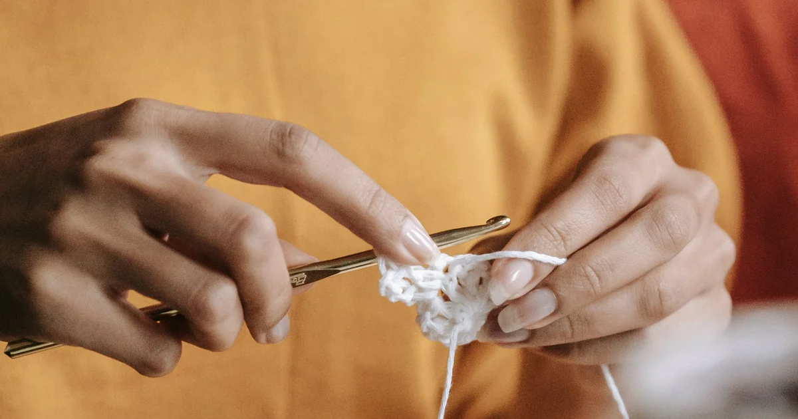
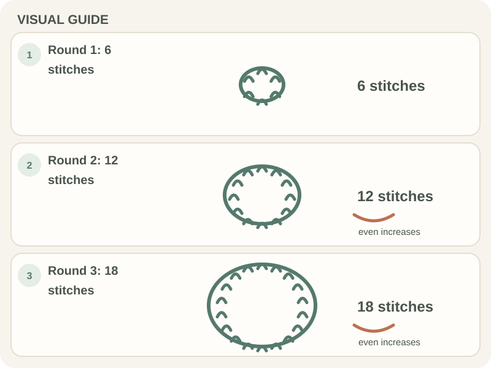

Beginner Projects · Beginner guide
How to Crochet a Beginner-Friendly Coaster
Shape a flat circular coaster by placing increases evenly around each round and checking for curling.

A circle needs increases to stay flat. This sample uses six evenly spaced increases per round in US sc; counts guide construction, not finished size.
Before you begin
Use a smooth yarn and suitable hook. Decide whether to join rounds or work in a spiral, then keep the method consistent.
Step-by-step instructions
- Make a starting ring and work six US sc into it for round one.
- For a common flat-circle sequence, increase in every stitch on round two to reach 12 stitches.
- On round three, place six increases evenly with one sc between them for 18 stitches; on round four, use two sc between increases for 24.
- Continue the increase logic, moving a marker at the round start. Fasten off at your preferred diameter.

What to check
Observe the fabric before adding rounds
Counts 6, 12, 18, and 24 follow this six-increase sample. If it cups, it may need more circumference; if it ripples, check increase count and tension before changing the pattern.
Frequently asked questions
Should every coaster have 24 stitches in round four?
No. That count follows this sample. Other stitch patterns or starting rings use different counts.
Why is the circle wavy?
It may have more circumference than needed. Check increase placement and tension before removing stitches.
Why does the sample use six stitches in the first round?
Six is the starting count for this common US single-crochet flat-circle sequence. Other stitches, patterns, and yarns may use a different starting count and increase schedule.
Read the sample counts as one sequence
This example begins with six US single crochets, then increases to 12, 18, and 24 by adding six increases in each round. The increase locations spread around the circle. These counts belong to this sample; they are not a universal rule for every stitch or yarn. Use the pattern’s total and marker to check your place, especially where a round joins or spirals.
Notice the difference between cupping and rippling
If a circle cups, it may not have enough circumference for the stitch, yarn, and tension; if it ripples, it may have more than needed. First compare your stitch count and increase placement with the pattern. Do not add or remove increases randomly to flatten the piece. A coaster’s intended dimensions and fabric also matter. Lay it flat without stretching, then decide whether the count or tension needs review.
Consider how the coaster will be used
The sample uses US single crochet and does not establish a finished size, tested heat resistance, or a specific fiber recommendation. Check the yarn label and pattern for care and use information. A dense fabric may make a stable shape, but the selected fiber still determines its care and suitability. Make a small sample and compare the relaxed circle before adding more rounds.
Understand what the sample’s increases do
In this example, each round adds six stitches, creating 6, 12, 18, and 24 total stitches. That is a common US single-crochet flat-circle sequence, not a universal formula for every yarn or stitch. Even spacing matters because clustered increases can form corners instead of a smooth circle. Move the marker at each new round and compare the total before continuing. If the fabric cups or waves, verify the count and pattern first; only then consider whether the pattern or tension is affecting the shape.
Common mistakes and how to fix them
- Adding increases wherever the circle looks uneven. Check the stated sequence and find where your count changed before altering it.
- Forgetting the marker in a spiral. The round start can drift. Move the marker into the first stitch each round.
- Blocking before verifying the increase count. Blocking may shape fabric, but it will not correct the wrong stitch sequence.
Tips that make it easier
- Lay the circle flat after each increase round to check its shape.
- Count the full round before beginning the next increase sequence.
- Use a marker to tell the first stitch from the join or turning point.
A useful next step
Check the pattern’s steps, materials, and fit on a small sample before committing to the full project. Use the written counts and care instructions for the yarn you choose.